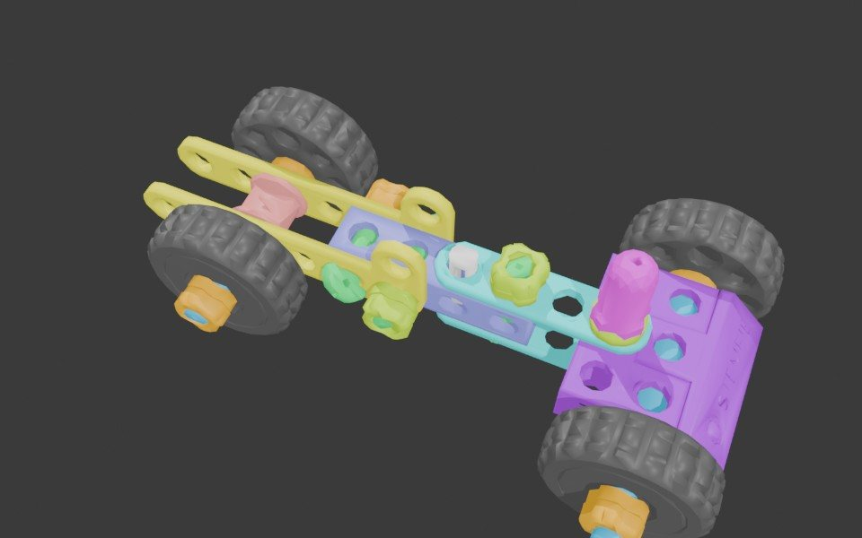
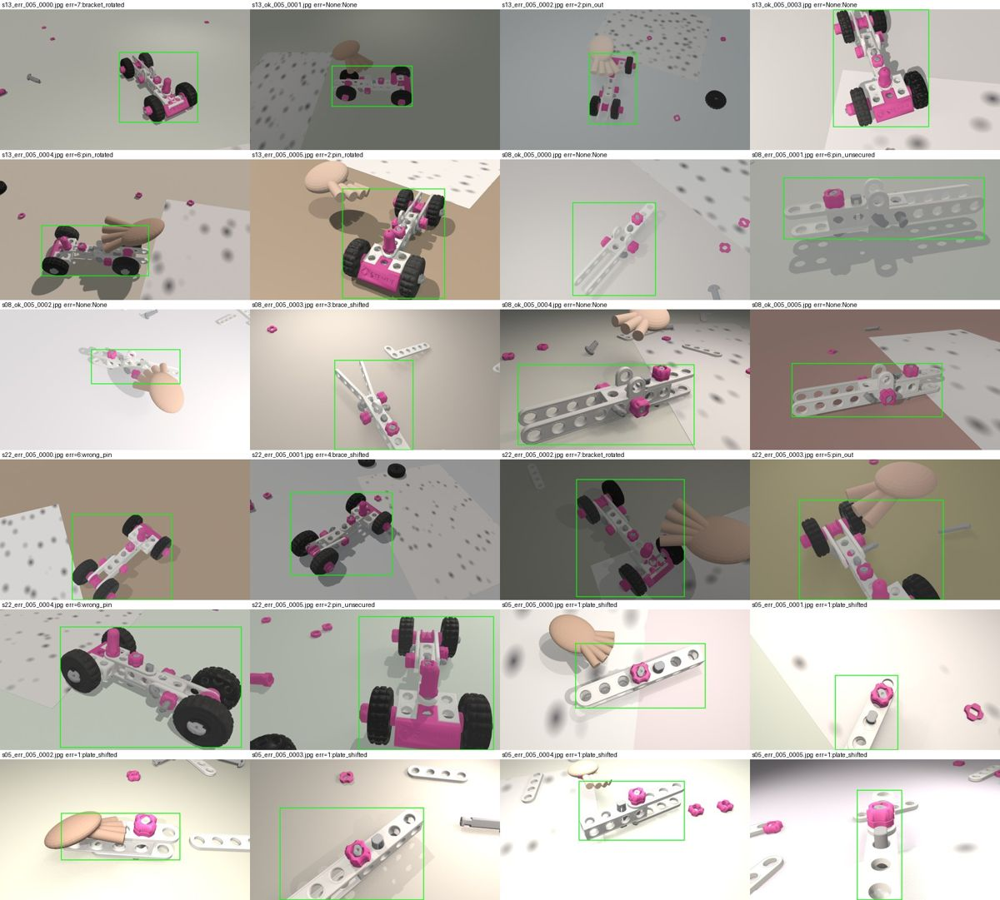
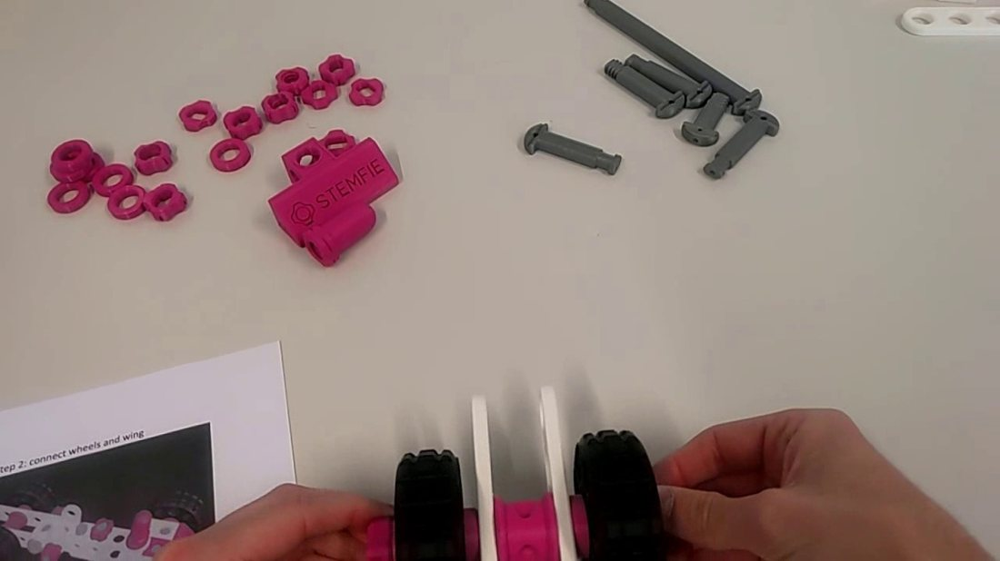
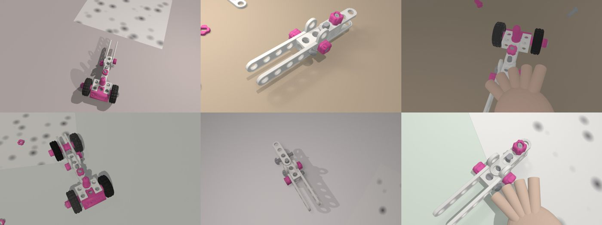
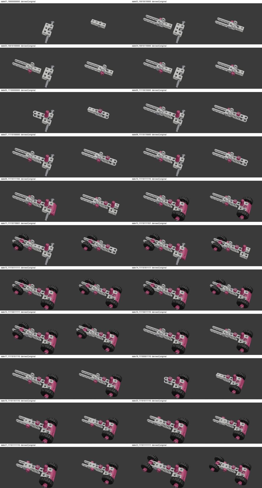

Stepwitness: a procedure monitor from the sheet and the CAD
Factories want a camera that watches a worker do a job, confirms each step was done properly, and flags a step that was skipped or done wrong. Building that today means months of filming and hand-labelling video for every new job, then starting over for the next one. We wanted to see how far you can get with only two things every factory already has before any video exists: the written work instruction and the CAD files of the parts.
The frame stepper appears here once the monitor has run on the test recordings. Until then the clip below shows what the model is trained on.
Why did we start this?
The current industrial-vision startups pitch "describe the task, give a few examples, get a production monitor in minutes." The hardest version of that claim is the zero-example one: no labelled video at all. There is exactly one public benchmark where it can be tested honestly. IndustReal is 84 head-camera recordings of 27 people assembling a construction-toy car, with 38 real execution errors, and the authors published the CAD of every part, their code, their predictions and their scores.
Their own conclusion names two open problems: the baseline "fails to generalize to out-of-distribution execution errors," and sim-to-real training is "crucial to scalability." Those two sentences are the whole project.
The idea in three sentences. A completed step is a change in how the assembly looks, and with the CAD you can draw every "after" from any angle in any light, thousands of times, for free. A vision foundation model already knows how to see shapes, so you freeze it and teach only a small layer the difference between pin in and pin out. The instruction sheet is a rulebook, so if the camera sees step 4 while step 2 was never seen, something was skipped.
The one new move is to draw the mistakes as well. The published system learned only correct states, so a wrong pin was accepted as correct. Rendering the wrong states from the same CAD is the direct fix.
What goes in, what comes out
| Setup inputs, once per job | Runtime outputs, every frame |
|---|---|
| The work instruction as plain text | Step completion events with timestamp, confidence and a frame link |
| The part geometry as CAD files | Step durations, cycle time, idle and interruption spans |
| Optionally one to five real photos per state. The headline run uses zero. | Flags for omission, wrong order and execution error, each linked to the frame and the instruction line |
| Nothing acted on automatically. Evidence for a person to review. |
How it is put together
Two lanes. The setup lane runs once per job and produces a procedure graph and a verifier. The runtime lane runs on every frame and produces the timeline.
The pieces, one at a time
1Procedure compiler
A language model reads the instruction text and writes one record per step: the component it moves, install or remove, the lines that must be done first, and a subgoal name. Step ids are computed in code from the component index, so a wrong id is impossible. The preconditions form a partial order, not a fixed sequence, which is how the dataset's 48 valid build orders are expressed without listing them. A person reviews the graph once.
Then a check walks every path through the graph and confirms that every state it can reach is one of the 22 states the dataset labelled. This caught the model's first drafts: it under-constrained the bracket, and the graph reached ten states the dataset never allows. The validator rejected them without anyone reading the draft.
2Render factory
Blender loads a state file, separates it into its physical parts, and classifies each part by colour and size: wheel, pin, clip, brace, plate, block, knob. Each scene is then rendered many times with everything randomized that a camera would see vary on a real line: light direction and strength, table texture, camera position on a hemisphere at head-camera angles, lens field of view, hand-shaped occluders, and copies of the real parts scattered on the table as distractors. Labels are free because the renderer knows where every part is.

Error states are made by editing parts inside the file: a pin pulled part-way out, a clip removed, a pin turned across, a wrong-length pin, a wheel without its nuts, braces slid or tilted. The label is the state code with a −1 at that component, the dataset's own convention for an incorrectly installed part.



Two approaches tried and dropped. Mapping parts across the 22 files by matching geometry failed: each file is exported at its own level of detail, and the complete model is built differently at the front end from the early-state files. We rebuilt every state that way and rendered it next to the dataset's own file, and the pairs did not match, so the per-file classifier replaced it.

3State verifier
- Input
- A crop of the assembly from one frame.
- How
- A frozen DINOv2 backbone reads the crop at 448 pixels. Its patch tokens are kept as an 8 by 8 grid rather than pooled into one vector, so the few patches that show a 3 mm clip can still decide the answer. A small attention-pooling head, trained on renders only, gives two outputs: which of the 22 correct states this is, and for each of the eleven components the probability that it is installed wrongly. The recognizer uses both: the state posterior drives step completion, and a component whose error probability stays high for several frames holds its step open and raises an execution error.
- Why
- This attacks the two failures the benchmark authors published: a wrong pin accepted as correct, and a missing wheel that stalled every later recognition.
The first verifier pooled the whole crop into one vector at 224 pixels and learned 144 classes. It found the correct state six times in ten and almost never named an error: a 3 mm clip is four pixels wide at that size and gone after pooling. Version 3 is the design above. Both are measured on the same 2,640 held-out renders, new views of the same objects, so these numbers say how well the head learned the renders, not how it does on real footage. That number comes from the monitor run below.
| On held-out renders | v2: pooled, 224 px | v3: patch grid, 448 px |
|---|---|---|
| correct state identified | 0.623 | 0.916 |
| exact label, state and every error digit | 0.383 | 0.625 |
| a crop with an error is flagged (recall) | 0.110 | 0.541 |
| a flagged crop really has an error (precision) | 0.865 | 0.773 |
| a correct crop is wrongly flagged | 0.015 | 0.138 |
| the wrong component is named, per component | 0.012 |
Half the errors seen in a single crop is not enough on its own; the recognizer sees tens of crops of the same state before it decides, which is what the end-to-end numbers measure.
4Step recognizer
This keeps the accumulate-and-decay core of the published baseline, because that core works and keeping it keeps the numbers comparable. Each frame the most likely state suggests which steps would take the current state there; those steps gain the frame's confidence, everything else decays, and a step completes when its total crosses a threshold. Three things change. The allowed set comes from the graph and moves after every completion. Steps whose preconditions are visibly absent raise an omission flag instead of completing. And an error verdict holds the step open. Parts that appear together, a chassis and its pin, complete together, because that is what the camera saw.
5Evidence timeline
Every event is a record with a type, the step, the instruction line, the frame, and the evidence: the box, the top state, the similarities. A small service serves the records and a page that seeks the video to the frame and shows the instruction line beside it. Durations, cycle time and idle spans are arithmetic over the events. Nothing is acted on.
6Edge package
The localizer and the backbone are exported and timed at FP32 and FP16 on the development GPU, with p50 and p95 latency, throughput, peak memory, and power sampled from the driver ten times a second. INT8 through TensorRT follows once that package is installed. The profile file is written by the profiler, never by hand.
The state code
The benchmark describes the assembly with eleven components in a fixed order; each digit says whether that component is correctly installed. 1 is installed, 0 not yet, -1 installed wrongly. So 11100000000 is base, front chassis and front chassis pin done. The graph, the renders and the verifier all speak this code, which is why a completion is just a change in one digit.
| Pos. | Component | Pos. | Component |
|---|---|---|---|
| 1 | base | 7 | rear-rear chassis pin |
| 2 | front chassis | 8 | front bracket |
| 3 | front chassis pin | 9 | front bracket screw |
| 4 | rear chassis | 10 | front wheel assembly |
| 5 | short rear chassis | 11 | rear wheel assembly |
| 6 | front-rear chassis pin |
How it is scored, and the first result
With the authors' own metric code, unchanged. Procedure order similarity compares the predicted completion order with the true one as two strings, where a swap of neighbours costs little and a wrong step costs as much as a delete plus an insert. F1 counts a completion as correct only if it comes at or after the real completion. Delay is the average time between a true completion and the system noticing it.
Before measuring anything of ours, we reproduced theirs. The authors published their detector's predictions on the test split; replaying them through their recognizer and metric on this machine gives every row of their Table 4 to three decimals, on all 32 test recordings:
| Baseline | Trained on | POS all | F1 all | Delay | POS errors | F1 errors |
|---|---|---|---|---|---|---|
| B1 naive | real video | 0.570 | 0.779 | 14.9 s | 0.480 | 0.698 |
| B2 confidence | real video | 0.731 | 0.860 | 22.3 s | 0.636 | 0.784 |
| B3 expected | real video | 0.797 | 0.883 | 22.4 s | 0.731 | 0.816 |
| B3 expected | synthetic only | 0.597 | 0.734 | 49.5 s | 0.571 | 0.731 |
| Stepwitness, procedure guards on | renders only | pending the first full run | ||||
| Stepwitness, guards off, B3 constants | renders only | pending the first full run | ||||
Results are reported as measured, including the ones that fall short, with the frames that broke it.
Where it stands
| Phase | What | State |
|---|---|---|
| 0 | reproduce the published baseline from the authors' predictions | done, exact to three decimals on all 32 recordings |
| 1 | procedure graph, compiler, validation against the 22 labelled states | done, 10 tests |
| 2 | render factory with generated errors | done, 13,200 renders |
| 3 | verifier and localizer trained on renders | verifier v3 done; localizer training |
| 4 | monitor over the 32 test recordings, scored with the authors' code | queued |
| 5 | evidence timeline and viewer | done, 3 tests |
| 6 | edge profile | profiler ready |
What we learned the hard way
- A local language model holding 5 GB of the 8 GB graphics card made the renderer's shaders fail to compile. The error said nothing about memory. Unloading the model fixed it.
- The ray-tracing kernels of the renderer fail to load on this driver; the CUDA path works.
- Blender resolves a relative output path against the drive root, not the working directory. The first renders landed in
C:\data. - The camera's matrix is stale until the view layer updates; half the samples were silently skipped as "out of frame" before that one line was added.
- Upgrading the detector library pulled a CPU-only torch into the environment and hid the CUDA build.
- The archive server refuses parallel downloads; four parallel transfers corrupted each other's files and had to be redone.
- Both render batches died at state 15 on the same line: the wheel-loose error edit assumed an axle part had been classified, and that file has none.
- With a few gigabytes of memory free, holding 13,200 token grids in RAM is impossible and a data loader with worker processes exhausts the page file. The build that survived writes tokens straight into a memory-mapped file, resumes from where it stopped, copies to the GPU in chunks, and runs the detector trainer without workers.
- The same training run that died silently inside a background shell finished when run in the foreground. Logs that stop without an error are the machine, not the code; the fix was to look at free memory, not at the script.
References
- Schoonbeek, Houben, Onvlee, de With, van der Sommen. IndustReal: A Dataset for Procedure Step Recognition Handling Execution Errors in Egocentric Videos in an Industrial-Like Setting. WACV 2024. arxiv.org/abs/2310.17323
- IndustReal code, weights and predictions. github.com/TimSchoonbeek/IndustReal
- Schoonbeek et al. Supervised Representation Learning towards Generalizable Assembly State Recognition. RA-L 2024. arxiv.org/abs/2408.11700
- Huang et al. Modeling Multiple Normal Action Representations for Error Detection in Procedural Tasks. 2025. arxiv.org/abs/2503.22405
- Bacharidis, Argyros. Vision-Based Mistake Analysis in Procedural Activities: A Review. 2025. arxiv.org/abs/2510.19292